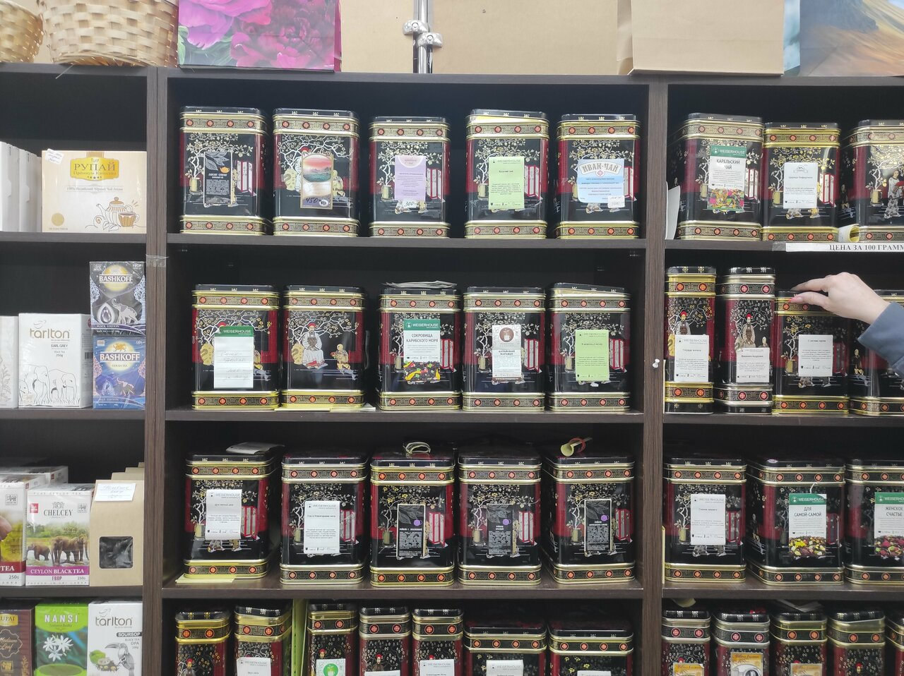
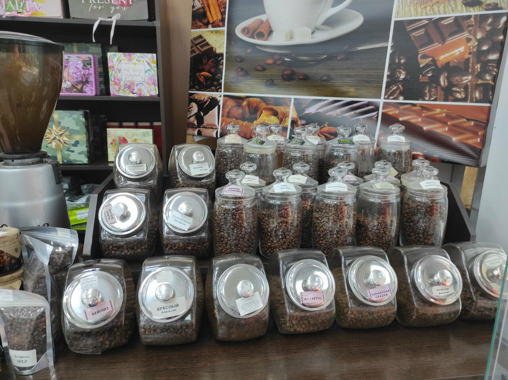
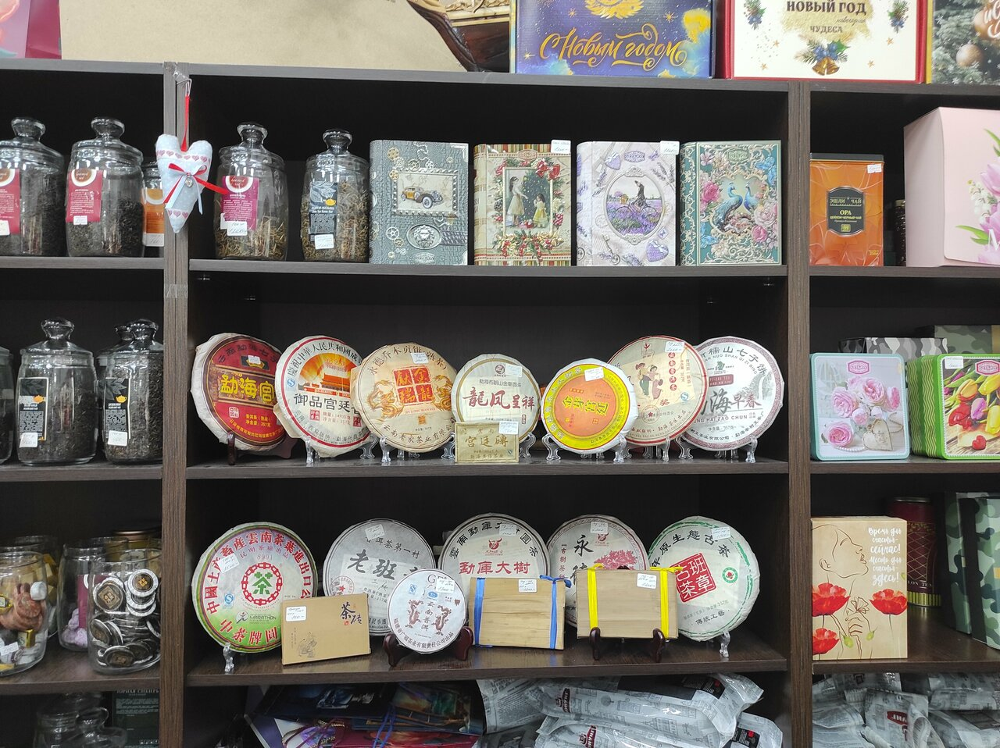

Чай на развес
01Чёрный и зелёный, улуны и пуэры, душистые травяные сборы. Найдём вкус под ваше настроение.
Выбрать свой чай
Чайная лавка в Северном
Любимый чай, ароматное зерно и что-нибудь
сладкое. Выбирайте не спеша — мы поможем.
От 100 граммовЧай и кофе на развес
Помол под ваш способТурка, фильтр или эспрессо
Подарки с тепломСоберём набор для близких
01 / Наш ассортимент
От первой утренней чашки
до долгих вечерних разговоров.
Чёрный и зелёный, улуны и пуэры, душистые травяные сборы. Найдём вкус под ваше настроение.
Выбрать свой чай
Смелем при васАрабика, купажи и ароматизированное зерно. Для бодрого утра и маленькой паузы среди дня.
Найти свой кофе
К чаю и в подарокКонфеты, пастила, печенье и восточные сладости. Приятное дополнение к любимой чашке.
Заглянуть за сладким02 / Давайте знакомиться
Мы — «чайKOFF», ваш соседский магазин в Северном. Здесь можно открыть банку, вдохнуть аромат и выбрать именно тот чай, за которым захочется вернуться.
Подскажем, как заварить новый сорт, смелем кофе под вашу кофеварку и поможем собрать подарок. Просто загляните по дороге домой.
Будем рады знакомству03 / Что на полках
Наличие и цены подскажем
по телефону или в магазине.
Хочется порадовать близких? Соберём чай, кофе и сладости в один подарок.
Обсудить подарок04 / Заходите в гости
Ежедневно до 20:00
+7 953 588-80-02Построить маршрут